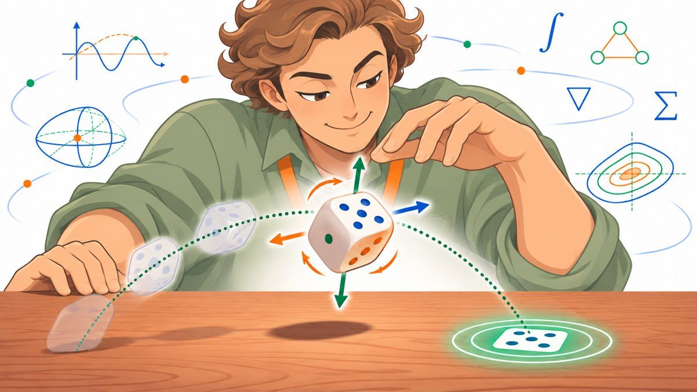
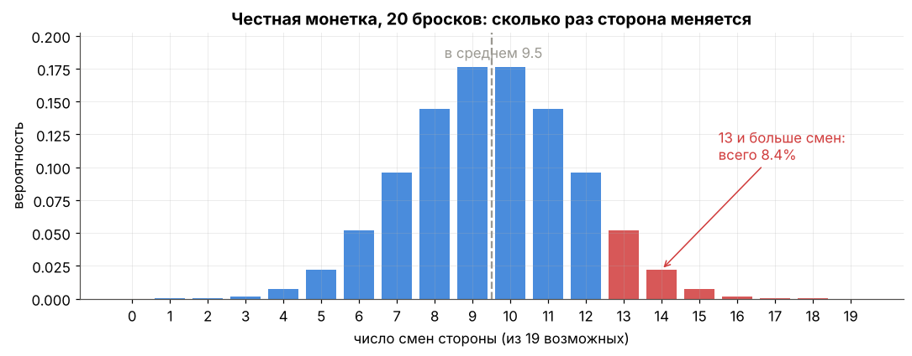

В 1814 году Лаплас предложил мысленный эксперимент. Представь существо, которое знает положение и скорость каждой частицы во Вселенной и все силы между ними и умеет считать без ограничений. Для него нет случайности: исход броска кубика, погода через год и твой завтрашний заказ такси — просто результат вычисления.
Занятие 1 · блок 2
Откуда берётся шум

Боб
Подожди. Если фича ни при чём, почему цифры вообще скачут каждый день? Мы же ничего не меняли.
В обоих кейсах блока 1 цифры менялись без всякой фичи. Прежде чем искать эффекты, надо понять, почему данные вообще «скачут», — и как об этом говорить честно.
Демон Лапласа

Вопрос залу. Бросок кубика случаен сам по себе — или случаен для нас? Что определяет, какой гранью упадёт кубик?
Ответ
Грань определяют начальное положение, сила и точка толчка, вращение, воздух, упругость стола, каждое столкновение. В классической механике, зная всё это идеально, мы получим одну конкретную грань — не «шестёрку с шансом одна шестая», а именно эту.
Но мы не демон: маленькая ошибка в начальных условиях даёт совсем другой исход. Поэтому разумно моделировать бросок как случайный.
Кубик случаен для нас. 1/6 — не свойство слова «кубик», а предположение о честном кубике, которое можно проверять по данным. Квантовая физика картину усложняет, но нам важен практический вывод.
Фальшивая монетка
Проверим, насколько хорошо человек умеет изображать случайность. Открой игру в боте и придумай последовательность из 20 бросков монеты — такую, чтобы её нельзя было отличить от настоящей. Монету не подбрасывай: только из головы.
Запись одной строкой: О — орёл, Р — решка, ровно 20 символов.
Как профессор угадывает обманщиков
Классический трюк преподавателей вероятности: половина группы 200 раз подбрасывает монетку, половина придумывает результаты. Профессор, глядя на листки, почти без ошибок находит выдумщиков. Признак простой: в настоящих 200 бросках почти всегда есть серия из шести и более одинаковых подряд. Выдумщики считают длинные серии «неслучайными» и избегают их.
Задача 3. Серии в 20 бросках
- В какой доле честных последовательностей из 20 бросков есть серия из 5+ одинаковых подряд?
- Сколько раз в среднем монетка «меняет сторону» за 20 бросков? Почему именно столько?
- Сравни с последовательностями группы из сводки бота.
Решение
Шаг 1. Серии. Серия 5+ есть у ≈46% честных последовательностей, 6+ — у ≈24%. Самая длинная серия в среднем 4.7.
Шаг 2. Смены стороны. В 20 бросках 19 соседних пар. В каждой паре сторона меняется с вероятностью ½: какой бы стороной ни лёг предыдущий бросок, следующий с вероятностью ½ другой. Ожидание суммы — сумма ожиданий: .
Шаг 3. Придуманные последовательности. Типичный профиль: смен заметно больше 9.5 — люди чередуют чаще монетки; самая длинная серия 3–4; орлов почти ровно 10. Сравнивай средние по группе, а не отдельные строки: одна честная на вид последовательность ничего не доказывает.
Настоящая случайность выглядит «слишком полосатой», и интуиция о ней ненадёжна. Поэтому распределять пользователей в A/B должен алгоритм, а не человек. И после трёх орлов решка не становится «должной»: монетка не помнит прошлое.
Сколько раз монетка меняет сторону

- Смены независимы. Любую последовательность можно однозначно записать как «первый бросок + 19 отметок „была смена / не было“». Последовательностей , таких записей тоже . Все последовательности равновероятны, значит, и все наборов отметок равновероятны — это 19 независимых честных «да/нет».
- Распределение. Число смен : . Среднее 9.5, .
- Хвост. . У выдуманных последовательностей 12–15 смен — норма, у монетки — 8%.
- Число орлов : от 9 до 11 — около 50%, ровно 10 — лишь 18%, а 7 и меньше или 13 и больше — 26%. Люди подгоняют к 10:10; у монетки 7:13 — нормально.
У случайности узнаваемая форма — длинные серии и неровный счёт. Тот, кто старается «выглядеть случайно», её ломает: слишком много переключений и слишком ровный счёт.
Монетка помнит, как лежала
В 2023 году Франтишек Бартош с коллегами собрали 350 757 подбрасываний монеты от 48 человек. Монета приземлялась той же стороной, какой лежала до броска, в 50.8% случаев. Ровно это предсказала физическая модель броска Перси Диакониса (2007): монета в полёте «виляет» и чуть дольше остаётся исходной стороной вверх.
Бросок монеты — классическая механика. Он «случаен», потому что мы не знаем и не контролируем начальные условия, а не потому, что физика бросает кости. Перекос в 0.8% виден только на сотнях тысяч бросков — вернёмся к этому, когда будем считать, сколько данных нужно, чтобы увидеть маленький эффект.
Модель
Данные — это следы процесса, который мы целиком не видим: чёрного ящика. Модель — явное предположение о том, как этот ящик порождает значения: «каждый показ — клик с вероятностью , независимо от других». Правильных моделей не бывает; бывают полезные для конкретного решения. Все формулы курса верны внутри модели — поэтому её предпосылки мы обязаны проверять.

Котейка
Мур. Чёрный ящик — это мой мешок. Из него вылетают чеки, клики и поездки, а заглянуть внутрь ты не можешь. В симуляциях ты на минуту станешь мной: сам положишь в мешок известный механизм и будешь знать ответ. В жизни мешок не развязывается. Как думаешь, что из этого следует для любой красивой формулы?
Ловушка: число без модели. Если предпосылки не выполняются — наблюдения зависимы, распределение не то, — формула всё равно выдаст число. Просто это число будет враньём, и по нему не будет видно.
Какова вероятность, что следующим президентом станет кандидат N?
Что вообще означает «вероятность» для события, которое случится один раз?
Ответ
Частотная интерпретация — доля исхода при многократном повторении опыта в тех же условиях. Выборы при тех же условиях не повторить, поэтому нужна явная модель, например по похожим выборам.
Байесовская — степень уверенности при имеющейся информации; для единственного события она естественна.
Оба подхода используют данные и предположения; отличие не в том, что один «верит», а другой «смотрит на данные». Подробно — на занятии 3.
Случайность — модель незнания
Случайность в аналитике — это модель нашего незнания. Мы выбираем модель, пользуемся её формулами и проверяем её предпосылки, а не верим ей навсегда. Язык вероятностей — язык честного незнания: «мы видим рост, но пока не знаем — это фича, сезонность, акция или шум».